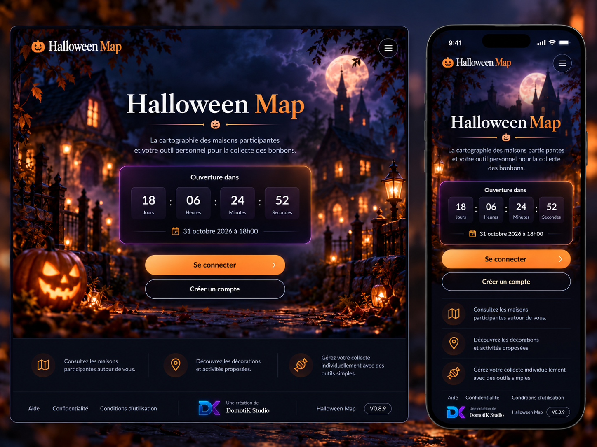
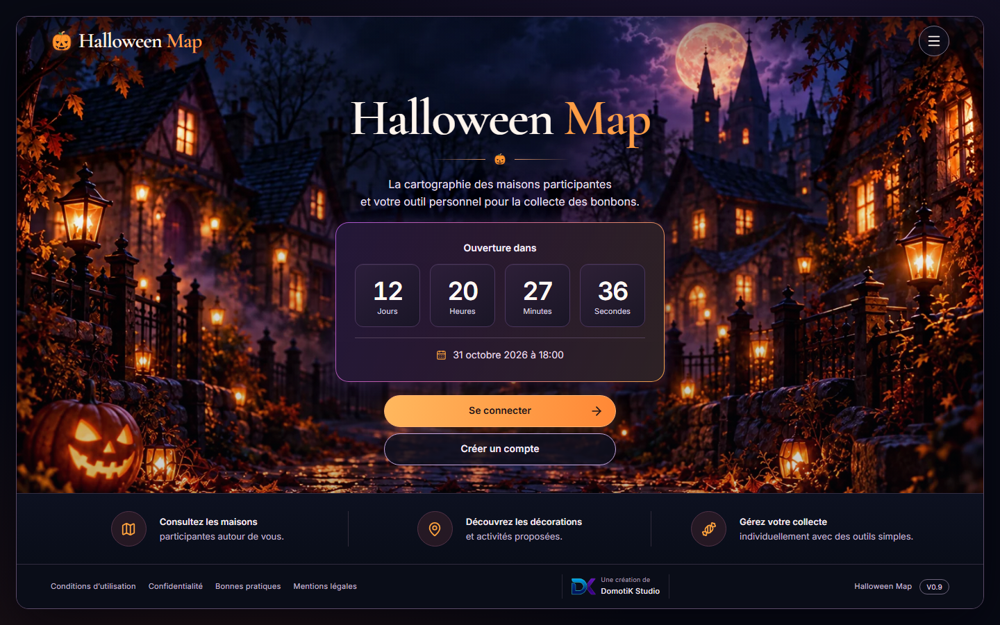
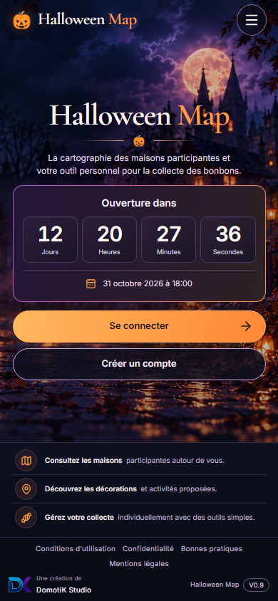
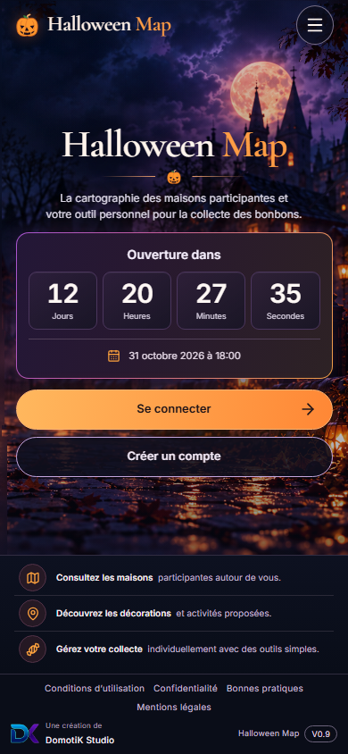

Halloween Map · revue V0.9.1
Base restaurée acceptée — PR en brouillon. Le mobile et le desktop partagent le même master adapté depuis la version mobile. Le rendu reste une restauration, sans identité pixel à pixel avec la maquette. Publication soumise à validation finale.
Maquette approuvée et rendu actuel
Référence impérative — fichier original fourni
Capture réelle desktop — 1440 × 900
Capture réelle mobile — 390 × 844
Mobile incliné — plans transparents du même master
Constats de revue
Le village, la lune, les lanternes, les branches et la citrouille appartiennent au même master sur les deux formats. Le header est intégré au décor, le compteur utilise les chiffres sans serif du mobile. Les zones cachées par l’interface et l’extension latérale ont été reconstruites ; les détails ne sont pas identiques à la maquette. La bande informative reste plus compacte pour préserver un écran sur mobile.
Le vrai fichier DK est repris sans redessin. Le menu reste unique, les descriptions non interactives, les actions d’authentification et les mentions restent visibles. Les captures sont réalisées avec une horloge serveur simulée ; elles ne constituent pas un relevé de données de production.
Reprendre la PR 30 · Provenance et prompt de restauration